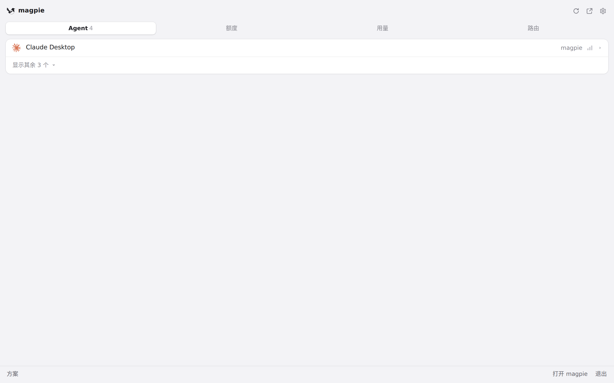
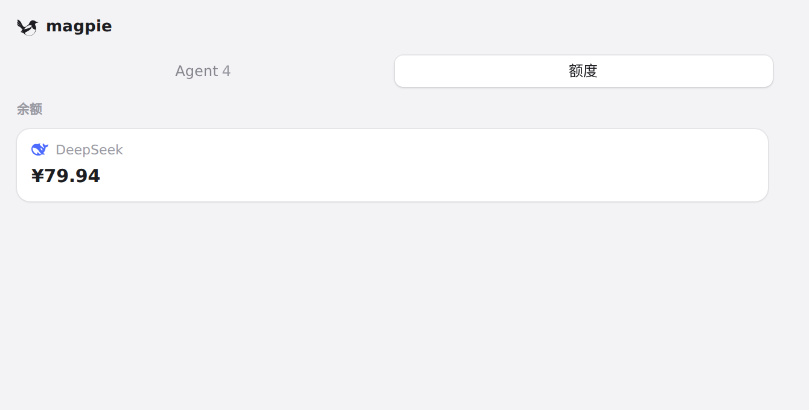
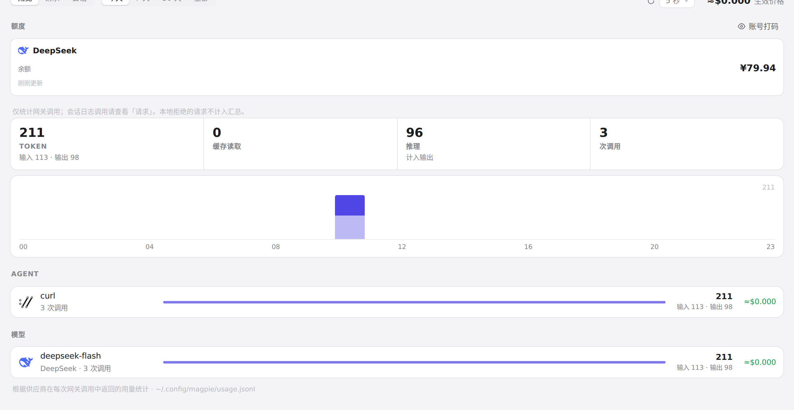
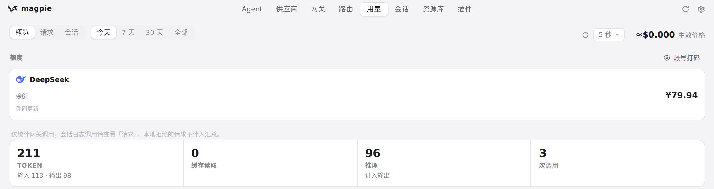

#662 界面预览
commit 62e9cc8 · 回到 PR · 额度卡现在带上了稳定的定位信息（data-card），菜单栏用量格子的点击可以把面板切到「额度」标签、滚动到并高亮对应卡片，主窗口也能按 card/provider 直接打开用量概览；高亮动画复用到订阅卡和面板额度卡上。
红线是鼠标走过的轨迹，红色圆环是一次点击；底部文字是这一步在做什么。空格暂停，← → 逐段查看。

面板「额度」里的余额卡 · 面板打开时停在「Agent」标签

面板「额度」里的余额卡 · 面板「额度」里的 DeepSeek 余额卡（菜单栏格子点击会定位到这类卡片）

主窗口用量概览的额度卡 · 主窗口「用量 · 概览」的额度区

主窗口用量概览的额度卡 · 概览里的 DeepSeek 额度卡：托盘设为「窗口」时从菜单栏打开会落在这里